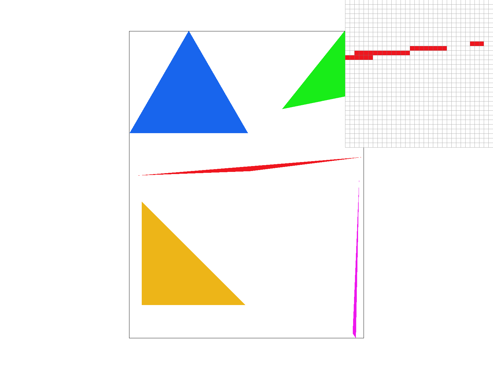
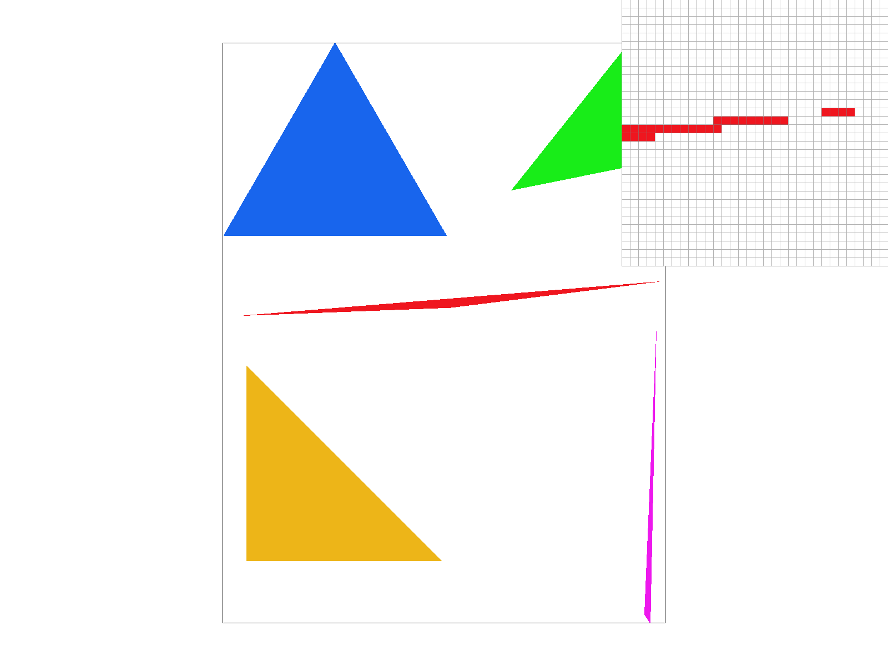
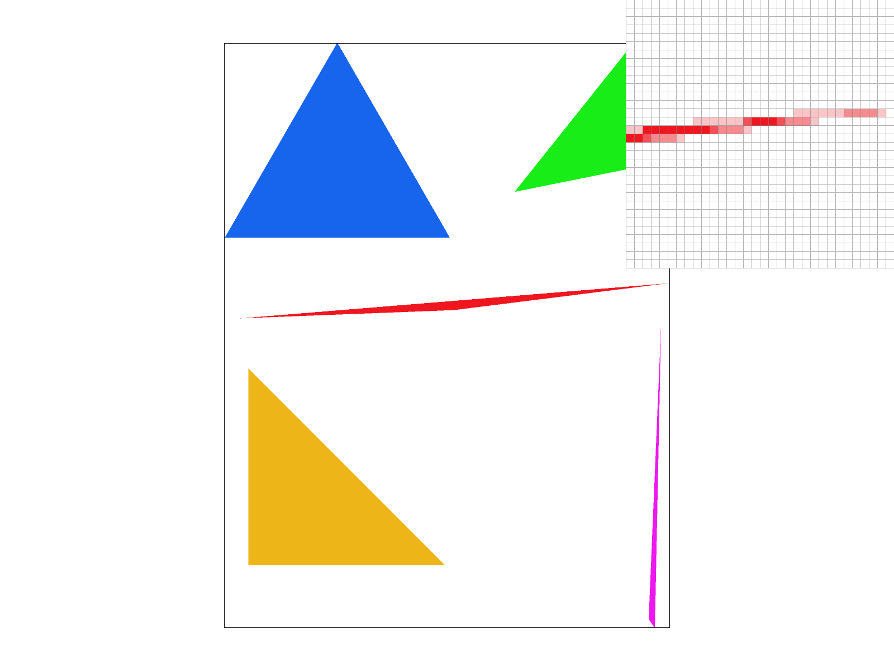
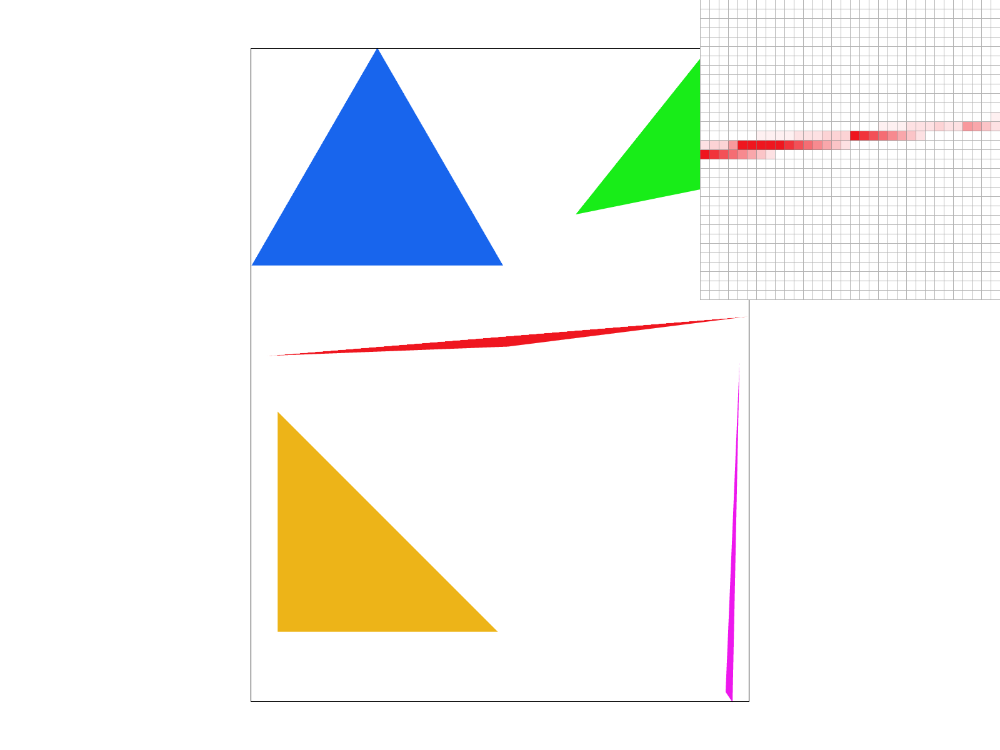
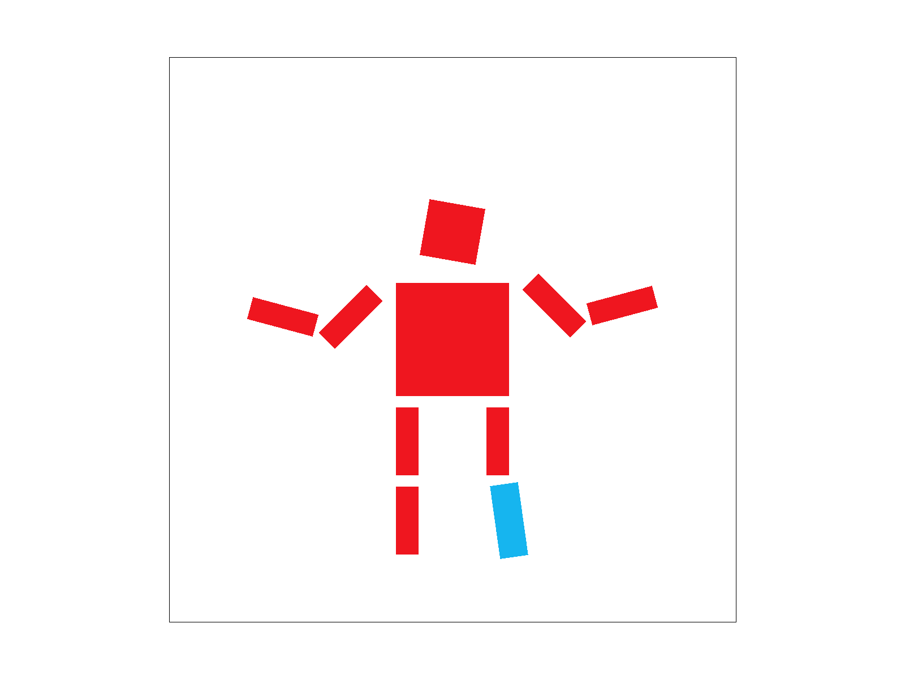
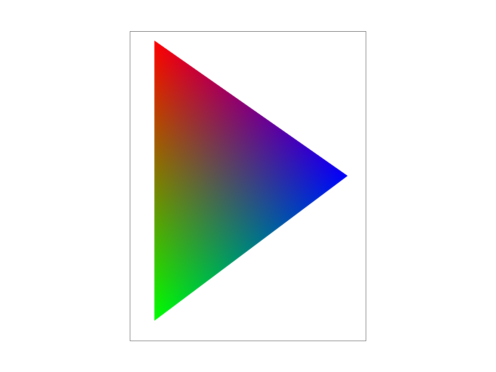
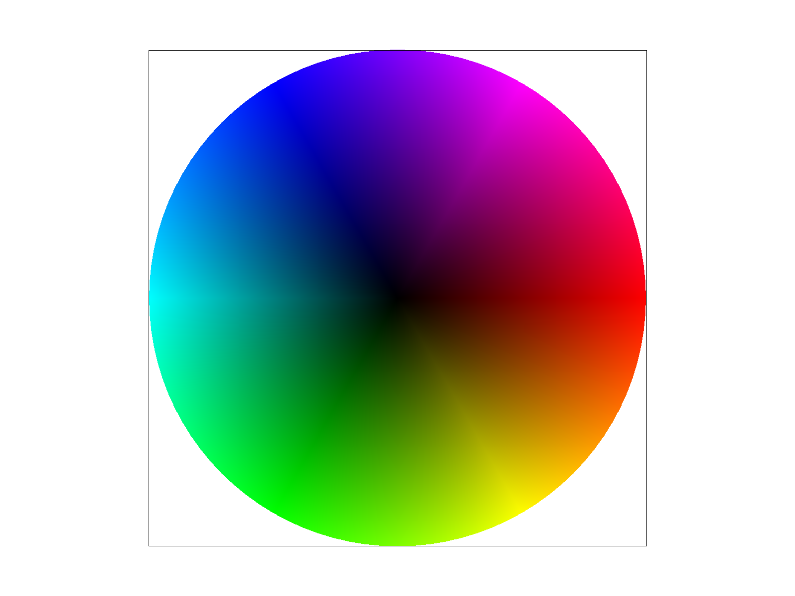
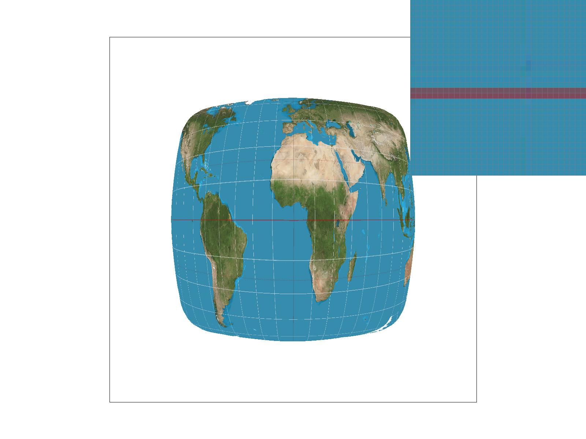
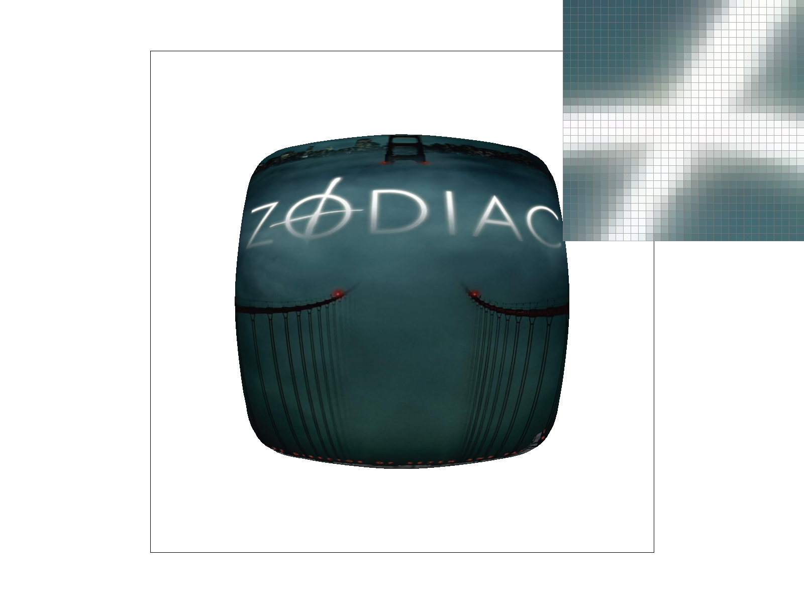

In this homework, I implemented increasingly sophisticated ways to rasterize triangles, improving upon the first task of drawing single-color triangles in various aspects throughout the homework:
The process of rasterization takes a precise, continuous shape and draws it onto a non-precise, discrete frame buffer. In the case of triangles, as in Task 1, by sampling pixels within the frame buffer, I am able to rasterize a given triangle by determining whether the sampled pixel lies within the triangle or not, and coloring in the pixels that do. Here, “sampling pixels” means taking the coordinates of the center of a pixel, whereas “determining if it lies within the triangle” is done by taking a function of that point. This function consists of three line tests, where the lines are the sides of the triangle, and determines if the point is on, inside, or outside the side based on the sign of the outputted number. If the point is “inside” the line for all three tests, then the function will return true, meaning that we can color the pixel in! By repeating this process for all relevant pixels, we are able to rasterize any given triangle.
My algorithm only tests pixels within the bounding box of the triangle, which I find first. Moreover, for every row in the bounding box, I stop sampling pixels once I reach the outer edge of the triangle, ensuring that it is more efficient than checking every pixel in the bounding box. Specifically, my algorithm has a parameter that records when I have reached the triangle, i.e., when a pixel has been colored in, and iteration in a row will break once I exit the triangle, i.e., when pixels are no longer within the given triangle. This method works since triangles are convex shapes, so once I enter and exit a triangle in a row, I won’t encounter it again.

My supersampling algorithm iterates through all pixels in the bounding box of the triangle, and samples each pixel sample_rate times instead of just once. The way I implemented this is for every pixel I encounter, I split it into sqrt(sample_rate) rows and sqrt(sample_rate) columns, and test whether those sub-pixels’ centers lie within the triangle or not. Each of these samples are stored in sample_buffer, a vector of Colors whose size is the product of sample_rate and the size of the frame_buffer (and updates if either changes); with only one input color for the rasterize_triangle function, this means each entry in sample_buffer is either white or the input color. To actually rasterize the triangle, we call resolve_to_frame_buffer, which calculates the average color over all supersamples in one pixel, and uses that as the color of the pixel.
Supersampling is useful because artifacts often occur when the boundary of a triangle passes through a pixel, as our previous algorithm would just decide whether to color it in or not based on the position of the center of the pixel. Supersampling improves upon this process by accounting for how much of a pixel is within/outside a triangle, and uses intermediate colors to represent that, thus resulting in smoother edges and less jaggies.
The rasterization process is different here because instead of drawing directly into the frame_buffer for each pixel, we first store all our samples in sample_buffer, then rasterize the triangle by calling resolve_to_frame_buffer, which calculates the average color of each pixel and colors them in all at once.
This supersampling algorithm significantly reduced jaggies in my triangle tests, since it averages out colors for pixels on the boundary of a triangle, resulting in an antialiasing effect that produces an all-around smoother look for the triangle.
The following three images depict Test 4 rasterized with differentsample_rates!
|
 sample_rate = 1 |
 sample_rate = 4 |
 sample_rate = 16 |
The red triangle in this test image is super skinny, and rasterizing it without supersampling (i.e. sample_rate = 1) results in very jagged, staircase-looking edges as well as runaway pixels that aren’t connected to the majority of the triangle. As we up the
sample_rate, the edges are less jagged because instead of just using red and white, we utilize intermediate shades of red that soften the boundary. The runaway pixels are less obvious too, since any pixel with a subsample lying within the triangle will have a bit of color, thereby resulting in a smoother transition rather than pixels completely segregated from the rest of the triangle.

Barycentric coordinates are a coordinate system used to describe points in a specific triangle, generated in relation to its three vertices. The barycentric coordinate of any point within the triangle essentially tells you how far away it is from each of the vertices, with each of the three coordinates indicating the “weight” of each vertex, with a higher value indicating smaller distance from a vertex. Importantly, the three coordinates should always add up to one, further illustrating that it's a weighted coordinate system.

For instance, this triangle is defined by three vertices that are red, green, and blue respectively. None of the other points within the triangle have a defined color yet, but rasterize_interpolated_color_triangle uses barycentric coordinates of each point to interpolate their color. Since it is a weighted system, points closer to the red vertex appear more red, and so on, and the triangle appears to be smoothly blended due to the linear interpolation process. Here, the linearly interpolated value is color, but a similar effect can be produced for other properties as well.

Pixel sampling plays a crucial role in applying textures. Applying textures is the process of mapping pixels in screen space to their corresponding positions in texture space using uv coordinates, and sampling the color of nearby pixel(s) to use for the screen space pixel’s color. This method of determining which pixel(s) to reference in texture space is pixel sampling.
I implemented pixel sampling by defining two different pixel sampling methods and calling whichever one is toggled by the psm parameter in the rasterization process. Both methods take a UV coordinate as an input, which we calculate in the rasterize_textured_triangle method; it’s then converted to a position in texture space by multiplying u and v by the width and height of the texture respectively. Lastly, it returns the result of the sampling method, described below：
sample_rates and pixel sampling methods. The pixel inspector is hovering over the intersection of the equator and the second line of longitude (vertical) from the left.
|
 sample_rate = 1, psm == P_NEAREST |
sample_rate = 16, psm == P_NEAREST |
sample_rate = 1, psm == P_LINEAR |
sample_rate = 16, psm == P_LINEAR |
Bilinear sampling clearly defeats nearest sampling here for both sampling rates. When sample_rate = 1, the white line is so choppy for nearest sampling that it isn't even visible where the pixel inspector is hovering over, whereas a hint of it is visible for bilinear sampling. When we increase sample_rate to 16, the bilinear-sampled white line is much smoother than the one produced by nearest sampling, as all the pixels appear the same color rather than jumping between shades.
It is apparent that the differences in bilinear and nearest sampling become most apparent when sharp edges occur, such as the lines of latitude and longitude that are present in Test 1 and Test 2. Because edges and lines are high frequency, those changes are often not captured well by nearest sampling in comparison to bilinear sampling, which averages out more pixels to produce results.
Level sampling tells us how to use mipmaps for texture mapping. Mipmaps are a collection of the same texture file at varying frequencies and resolutions, utilized in texturing different parts of a scene to reduce aliasing. Level sampling takes into account a screen pixel’s footprint in texture space to determine what level of the mipmap we should be sampling from.
I implemented 3 different level sampling methods for Task 6, that are toggled based on the lsm parameter. Unlike in pixel sampling, where we only used UV coordinates of a pixel to sample from a texture, level sampling also considers the argument level (as the name suggests). A float value of this level is calculated by taking log 2 of the longer of the scaled differential UV vectors in texture space, which tells us the size of the screen pixel’s footprint in texture space; we implement this calculation in the helper method get_level.
Since levels of a mipmap are strictly integer values, though, we manipulate this parameter first before inputting it into the following methods:
As for the tradeoffs in these different sampling techniques:
Supersampling is slower and uses more memory, because we are taking significantly more samples and storing them within sample_buffer; . However, it successfully smooths out edges and reduces jaggies, whereas its effect in combating aliasing that arises in texture mapping is less pronounced.
For pixel sampling, bilinear sampling is much more costly than nearest sampling, as it requires sampling four nearest pixels and interpolating thrice, rather than just sampling once. But this extra effort produces significantly better results than nearest pixel sampling, as the filtering and interpolation help produce a smoother final image.
For level sampling, using mipmaps inherently requires more memory usage because we have to store different resolutions of a texture. However, level sampling produces a unique antialiasing effect that can’t be achieved by just supersampling or changing pixel sampling methods: by using pre-filtered textures, we can prevent artifacts such as moiré patterns that arise when we sample from texture files that are too high in resolution.
To illustrate different sampling results, I'm using an image of a Zodiac poster (one of my favorite movies!).
Now, I will run the image through the same warping present in Test 1 under texmap and test out different sampling combinations! Here are my results (pixel inspector is hovering over the "O"/crosshair):
lsm == L_ZERO, psm == P_NEAREST |
lsm == L_ZERO, psm == P_LINEAR |
lsm == L_NEAREST, psm == P_NEAREST |
 lsm == L_NEAREST, psm == P_LINEAR |
I ended up with this image after trying out a lot of others because the text on the poster helps showcase the sampling effects better, due to the sharp edges of the letters (like the lines in the previous task). The lights of the SF skyline, near the top of the image (not very visible in this writeup, unfortunately), also changed pretty drastically with different sampling choices.
Bilinear pixel sampling seemed to have the most pronounced smoothing effect, whereas nearest level sampling helped create a gradient on the edges of the lettering. Interestingly, the case where lsm == L_NEAREST, psm == P_NEAREST looks the least smooth (at least to me), because of that weird gradient produced by nearest level sampling.